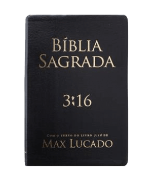
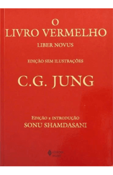
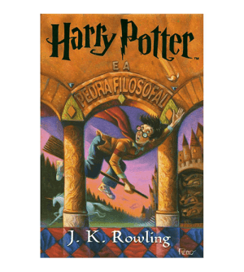
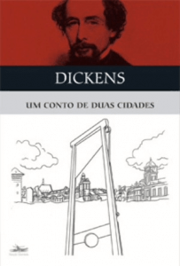

1º Bíblia Sagrada
A Bíblia Sagrada ocupou o primeiro lugar deste ranking há cerca de 50 anos atrás, e desde então permanece como o livro mais lido de todos os tempos. Foram espalhadas cerca de 3,9 bilhões de
cópias pelo mundo, sendo traduzida em mais de 3 mil idiomas e dialetos. Para quem não sabe, a Bíblia é uma coleção de textos religiosos com valor sagrado para os Cristãos.
2º O Livro Vermelho

Com cerca de 900 milhões de cópias vendidas, o Livro Vermelho é uma coletânea de citações do presidente
da República Popular da China Mao Tsé-Tung. O livro conta com 33 capítulos que abordam a ideologia de Mao,
também conhecida como Maosoismo. O livro se tornou popular especialmente pela exigência do governo chinês
de que todo cidadão deve ter uma cópia do livro.
3º Dom Quixote
O livro Dom Quixote foi lançado em 1615 e teve cerca de 500 milhões de cópias vendidas. Escrito por
Miguel de Cervantes y Saavedra, o livro conta a história de Dom Quixote e seu amigo Sancho Pança em
uma aventura heroica e divertida. Vale lembrar que Dom Quixote é um clássico da literatura mundial.
4º Saga Harry Potter

A saga impressa de Harry Potter vendeu aproximadamente 400 milhões de exemplares pelo mundo. O livro
mais vendido foi o primeiro, Harry Potter e a Pedra Filosofal, com 120 milhões de vendas. A saga de
J.K.Rowling foi traduzida em cerca de 65 idiomas e conquistou o mundo inteiro com Harry, Rony e Hermione
em suas aventuras pelo mundo da magia.
5º Um Conto de Duas Cidades

O livro de Charles Dickens surgiu no século XIX e se tornou o maior sucesso do romancista. A história é
referente a Revolução Francesa na Inglaterra, falando sobre como a luta pela liberdade de se transformar
pode se tornar a própria tirania. Um Conto de Duas Cidades teve 200 exemplares vendidos em todo o mundo.